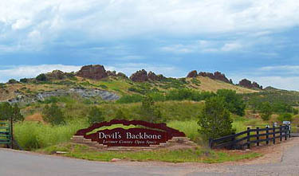

City of Loveland
Loveland, a beautiful city situated 46 miles north of Denver, is the 14th largest city in Colorado and the 2nd most
populous city in Larimer County. As of 2012, a little over seventy thousand residents live here with a median income of $57,000 per year.
Established in 1877, Loveland is the namesake of William A.H. Loveland, the president of Colorado Central Railroad. The railroad crossed over
the Big Thompson River and provided a means of transporting agricultural products to other regions in the U.S. During the early 1900's, Loveland supplied
large crops of sugar beets and sour cherries. In 1901, the Great Western Sugar Company built a factory that employed residents until its closure in 1985.
As for cherries, the Spring Glade orchard was the largest cherry orchard west of the Mississippi River.
More than $1 million worth of cherries were produced by these orchards per year. Unfortunately, droughts, attacks of blight and a killer freeze
destroyed the industry. By 1960, growth of cherries ended.
By the late 20th century, the economy shifted from agriculture to technology and industry. Large corporations such as Hewlett-Packard, Teledyne,
and Hach Chemical employed many residents in the area. At this time, Loveland receives a great deal of tourist traffic headed toward Estes Park and
Rocky Mountain National Park.

The Ft Collins-Loveland metropolitan area has received numerous awards as a great place to live by esteemed publications such as
Money Magazine, USA Today, and AARP's Magazine. There is a large population of artists in Loveland, which has drawn three foundries,
an art museum, and the annual sculpture shows in August. The city is a major business center for northern Colorado.
Loveland offers stunning scenery from surrounding lakes such as Lake Loveland, Boyd Lake, and Horseshoe Lake. Water fowl such as blue cranes
and pelicans migrate to these lakes early Spring. The Rocky Mountains provide a beautiful backdrop to the west.
It's a pleasure to live here since Loveland has the small town feel combined with easy access to entertainment at the Budweiser Events Center, shopping in
Old Town and at Centerra, and numerous recreational trails for biking, hiking, and walking.
Art is a defining attribute of Loveland. Many beautiful sculptures, murals, and generator-box art created by local artists are displayed throughout the city.
The Benson Sculpture Garden showcases 139 pieces of art that can be viewed along a walking path.